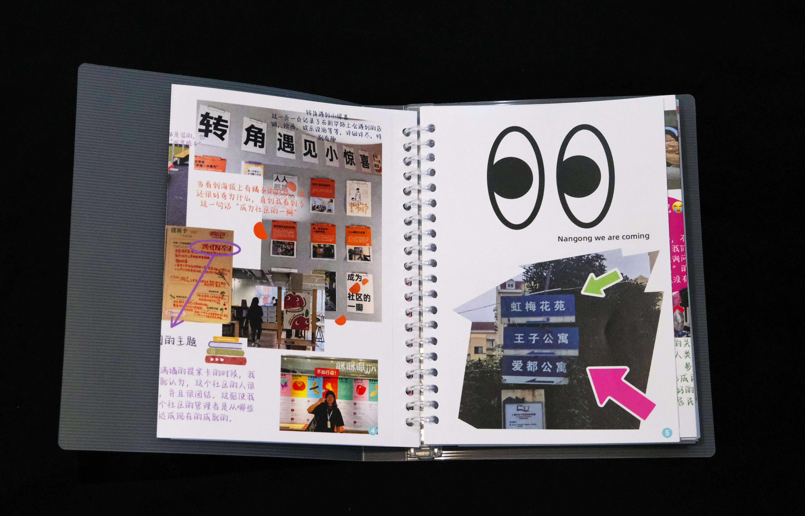
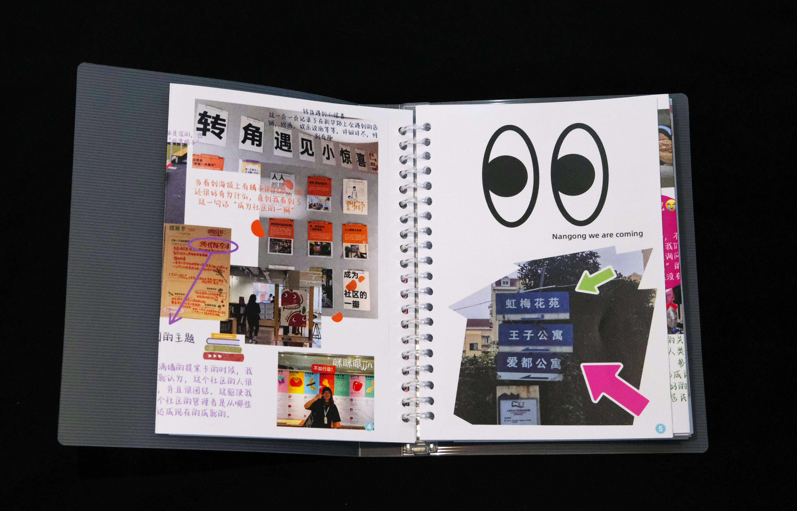
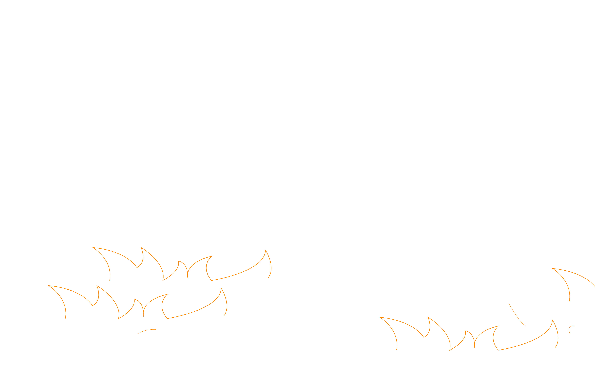
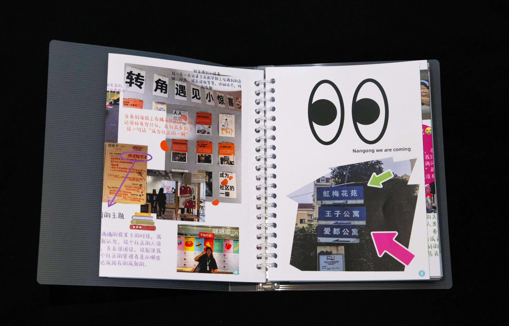

Welcome to Saki Ji's personal website, where you can see a selection of Saki ji's works & personal introduction. Please enjoy browsing this site.


Just an event about the Nangong community. Each of the things that exist in this community have their own meaning, and I don't know if you have noticed them, but together with the residents, they make up the Nangong community. To help the community get to know the community better, we have launched "Let's Draw! We hope that children living in the Nangong community will take their brushes and draw what they see as the most unique items in the community. The world as seen by children is always colourful and innocent. We want to draw the Nangong from the perspective of children. The children's drawings will be collected and made into an adventure map of Nangong, which will allow both first-time visitors and residents of the community to learn more about the Nangong community.